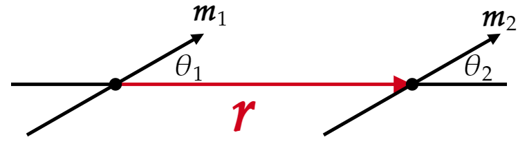

(a) Show that the energy of a magnetic dipole moment $\mathbf{m} $ in a magnetic field $\mathbf{B} $ is
\[U=-\mathbf{m}\cdot \mathbf{B} \](Assume that the magnitude of the dipole moment is fixed, and all you have to do is move it into place and rotate it into its final orientation. The energy required to keep the current flowing is a different problem, which we will confront in chapter 7.) Compare Eq. 4.6.
(b) Show that the interaction energy of two magnetic dipoles separated by a displacement $\mathbf{r} $ is given by:
\[U=\frac{\mu _0 }{4\pi }\frac{1}{r^3 } \left[ \mathbf{m}_1 \cdot \mathbf{m}_2 -3(\mathbf{m}_1 \cdot \hat{\mathbf{r}})(\mathbf{m}_2 \cdot \hat{\mathbf{r}}) \right] \]Compare to Eq. 4.7.
(c) Express your answer to (b) in terms of the angels $\theta _1 $ and $\theta _2 $ in Fig. 6.30.
Use the result to find the stable configuration two dipoles would adopt if held a fixed distance apart, but left free to rotate.
(d) Suppose you had a large collection of compass needles, mounted on pins at regular intervals along a straight line. How would they point (assuming the Earth's magnetic field can be neglected)?
(A rectangular array of compass needles aligns itself spontaneously, and this is sometimes used as a demonstration of "ferromagnetic" behavior on a large scale. It's a bit of a fraud, however, since the mechanism here is purely classical, and much weaker that the quantum mechanical exchange forces that are actually responsible for ferromagnetism).
Recall from the beginning of chapter 6 (page 271) that with dipole moment $\mathbf{m} $ in a field $\mathbf{B} $, the force is
\[\mathbf{F}=\nabla (m\cdot \mathbf{B}) \]By definition of work/energy:
\begin{align*} U &= -\int _{\infty }^{\mathbf{r}}\mathbf{F}\cdot d\mathbf{l} \\ &= -\int_{\infty }^{\mathbf{r}} \nabla (\mathbf{m}\cdot \mathbf{B})\cdot d\mathbf{l}\\ &= -\mathbf{m}\cdot \mathbf{B}(\mathbf{r})+\cancel{\mathbf{m}\cdot \mathbf{B}(\infty )}\\ &= - \mathbf{m}\cdot \mathbf{B}(\mathbf{r}) \end{align*}Where in the above we assume that the $\mathbf{B} $ field goes to zero at infinity and we also used the fundamental theorem of gradients ($\int_{\mathbf{a}}^{\mathbf{b}} (\nabla T)\cdot d\mathbf{l} =T(\mathbf{b})-T(\mathbf{a})$).
Recall that the magnetic field of a dipole can be written in coordinate free form:
\[\mathbf{B}_{\text{dip} }(\mathbf{r})=\frac{\mu _0 }{4\pi }\frac{1}{r^3 }(3(\mathbf{m}\cdot \hat{\mathbf{r}})\hat{\mathbf{r}}-\mathbf{m}) \]Using this and the result from part (a), it follows that
\[U=\frac{\mu _0 }{4\pi }\frac{1}{r^3 } \left[ \mathbf{m}_1 \cdot \mathbf{m}_2 -3(\mathbf{m}_1 \cdot \hat{\mathbf{r}})(\mathbf{m}_2 \cdot \hat{\mathbf{r}}) \right] \]We start by noting that
\[\mathbf{m}_1 \cdot \mathbf{m}_2 =m_1 m_2 \cos (\theta _2-\theta _1 ) = m_1 m_2 \bigg(\sin \theta _1 \sin \theta _2 +\cos \theta _1 \cos \theta _2 \bigg) \]And
\begin{align*} \mathbf{m}_1 \cdot \hat{\mathbf{r}} &= m_1 \cos \theta _1 \\ \mathbf{m}_2 \cdot \hat{\mathbf{r}} &= m_2 \cos \theta _2 \end{align*}So
\[U = \frac{\mu _0 }{4\pi }\frac{m_1 m_2 }{r^3 }\bigg( \sin \theta _1 \sin \theta _2 -2\cos \theta _1 \cos \theta _2 \bigg) \]Be careful with the algebra here. We have $-3 \cos \theta _1 \cos \theta _2 $ but also $+1\cos \theta _1 \cos \theta _2 $.
They will all point parallel to each other